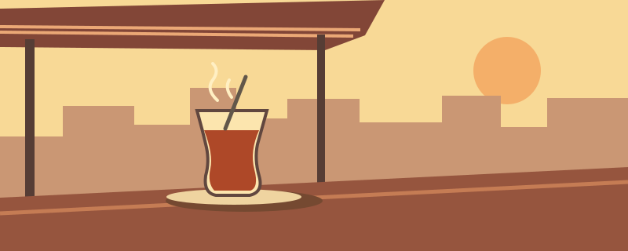

A walk to the Tigris
First a spoon against a tea glass. By the time you reach the water, all you hear are birds.

Press play, or jump to a stop:
First a spoon against a tea glass. By the time you reach the water, all you hear are birds.

Press play, or jump to a stop: